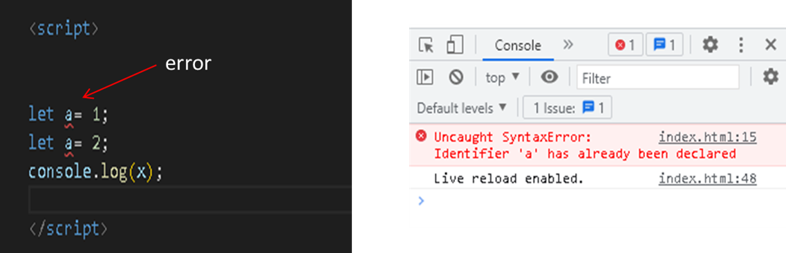

Introducción a JavaScript
JavaScript es un lenguaje de programación que se ejecuta en el ámbito de una página web. Es una herramienta muy importante sobre todo para la realización de una web dinámica. Estos programas se cargan en el navegador, ya que es un lenguaje de programación del lado del cliente. El lenguaje más utilizado de este tipo es el propio JavaScript. También existe una parte de JavaScript dedicada del lado del servidor (Server-side JavaScript o SSJS), pero en eso no nos vamos a meter, solo veremos su funcionamiento del lado del servidor.
¿Cómo funciona JavaScript?
Como cargar un archivo JavaScript
El esquema general de una página web es un documento HTML donde están todas las etiquetas HTML de la página. A lo largo de ese documento, pueden existir referencias o relaciones a otros documentos, como archivos CSS o archivos JavaScript.
Por ejemplo, si dentro del documento HTML se encuentra una referencia a un archivo CSS, el navegador lo descarga y lo aplica al documento HTML, cambiando su apariencia visual. De la misma forma, si encuentra una referencia a un archivo JavaScript, el navegador lo descarga y ejecuta las órdenes o acciones que allí se indican.
Tenemos varias maneras de introducir JavaScript en un documento HTML. Vamos a verlas:
Ejemplo de <script> en línea
En este primer y sencillo ejemplo, sólo tenemos un documento: el archivo HTML. En él, existe una etiqueta <script>..</script> que contiene las órdenes o líneas de JavaScript que le indican al navegador que tiene que hacer, en este caso, mostrar un "¡Hola!" en la consola.

<script> "¡Hola!" </script>
Este método de escribir <script>..</script> se denomina JavaScript en línea (inline), y significa que el JavaScript está escrito directamente en el código HTML. Nos puede servir como ejemplo inicial, pero no es la forma recomendable de escribirlo, ya que lo ideal es separar el código HTML del código JavaScript (en archivos diferentes) para organizarnos mejor.
Enlazando desde un JS externo asociado en el HEAD del HTML
Esta otra forma de incluir JavaScript en una página tiene la ventaja de, en el caso de necesitar incluir el código JavaScript desde varios documentos HTML, no tendremos que volver a escribir dicho código, sino simplemente referenciar el nombre del mismo archivo JavaScript a incluir en todas las páginas HTML.
Para más organización creamos una carpeta, con el nombre que ustedes deseen, luego nuevo archivo, el archivo siempre después del nombre con la extensión .js
El texto js/index.js no es más que una referencia a un archivo index.js que se encuentra dentro de una carpeta js, situada en la misma carpeta que el documento HTML del ejemplo. Si en este archivo JavaScript, incluimos el console.log() de mensaje de bienvenida, ese mensaje debería aparecer en la consola JavaScript al cargar esta página.
Para relacionar un documento JavaScript desde una página web, igual que antes, utilizaremos la etiqueta <script> </script>, sólo que en este caso, haremos referencia al archivo JavaScript con un atributo src (source), como se ve en el siguiente ejemplo:
<script src = " js/demo.js " > </script>
Dentro del BODY del documento HTML
index.html
Normalmente cuando añadimos el JavaScript desde un documento HTML, lo hacemos desde el final del documento. Aunque lo podemos hacer desde cualquier parte, de esta manera, nos aseguramos primeramente de que hemos cargado el documento HTML, por si vamos a trabajar sobre alguno de los elementos de dicho documento.
Lo más recomendable es trabajar con un fichero externo que contenga el JavaScript separando ambas capas (tecnologías/lenguajes). Por lo que, lo más recomendable es trabajar siempre enlazando un documento de JS externo desde el final del BODY del HTML.
Escrito directamente en la parte inferior del BODY del HTML: index.html

Conceptos básicos
Si no has programado hasta ahora, debes conocer una serie de conceptos básicos que tendrás que trabajar y dominar dentro del campo de la programación.
Programa
En programación se suele llamar programa al conjunto total de código que desarrollas. En JavaScript, quizás el término más utilizado es aplicación web (cuando es un desarrollo con mucha cantidad de JavaScript). También se suelen generalizar utilizando términos como «script» o «código JavaScript».
Algoritmo
Un algoritmo es un conjunto de pasos conocidos, en un determinado orden, para conseguir realizar una tarea satisfactoriamente y lograr un objetivo. Visto en artículo anterior.
Comentarios
Los comentarios en nuestro código son fragmentos de texto o anotaciones que el navegador ignora y no repercuten en el programa. Sirven para dejar por escrito detalles importantes para el programador. De esta forma cuando volvamos al código, nos será más rápido comprenderlo. Es una buena costumbre comentar en la medida de lo posible nuestro código.
Cuando comenzamos a programar, por lo general, se nos suele decir que es una buena práctica mantener comentado nuestro código con anotaciones que faciliten la comprensión de las tareas que realizamos y los problemas que pretendemos solucionar, ya que el código que creamos no suele ser muy bueno, ni mucho menos descriptivo, ya que estamos en fase de aprendizaje.
A medida que conseguimos destreza programando, notaremos que los comentarios son cada vez más prescindibles, sin embargo, conviene no dejar de comentar, sino en su lugar, aprender a comentar mejor.
Una serie de consejos a tener presentes a la hora de dejar comentarios en nuestro código:
- * No comentes detalles redundantes. No escribas lo que haces, escribe por qué lo haces.
- * Mejor nombres de variables/funciones/clases descriptivas que comentarios descriptivos.
- * Sé conciso y concreto. Resume. No escribas párrafos si no es absolutamente necesario.
- * Intenta usar siempre el mismo idioma y estilo de comentarios.
- * Con el tiempo, los comentarios no se suelen mantener, modificar el código sí.
En JavaScript existen dos tipos de comentarios: los comentarios de una sola línea y los comentarios de múltiples líneas.
El primero de ellos se caracteriza porque comienza con // y sólo comenta la linea actual desde donde se escribe.
El segundo tipo se utiliza para hacer comentarios extensos que ocuparán varias líneas. Comienza por /* y comentará todo el texto que escribamos hasta que cerremos el comentario con un */.
Indentación
Se llama indentar a la acción de colocar espacios o tabuladores antes del código, para indicar si nos encontramos dentro de un if, de un bucle, etc... Esta práctica es muy importante y necesaria.
A medida que escribimos líneas de código en nuestro programa, se irá complicando y nos tomará más tiempo leer lo que hemos hecho y comprobar si hay errores o como solucionarlos. Sin embargo, para mejorar la rapidez con la que leemos (y entendemos) nuestro código, una buena práctica es usar la indentación.
Se llama indentación de código al hecho de utilizar sangrado (mover ligeramente hacia la derecha) en las líneas de código para facilitar la lectura, e indicar visualmente si nos encontramos en el interior de una función, bucle, condicional, etc. Observemos el siguiente ejemplo:
Observemos este otro código (mal indentado):
Una buena práctica de programación es indentar correctamente las líneas de código que escribamos, no obstante, la mayoría de los editores están configurados para que al pulsar ENTER se indenten automáticamente.
Variables
En JavaScript es muy sencillo declarar y utilizar variables, pero aunque sea un procedimiento simple, hay que tener una serie de conceptos previos muy claros antes de continuar para evitar futuras confusiones, sobre todo si estamos acostumbrados a otros lenguajes más tradicionales.
En programación, las variables son espacios donde se puede guardar información y asociarla a un determinado nombre. De esta forma, cada vez que se consulte ese nombre posteriormente, te devolverá la información que contiene. La primera vez que se realiza este paso se suele llamar inicializar una variable.
En JavaScript, si una variable no está inicializada, contendrá un valor especial: undefined, que significa que su valor no está definido aún, o lo que es lo mismo, que no contiene información.
Como se puede observar, hemos utilizado console.log() para consultar la información que contienen las variables indicadas.
Nota: Las mayúsculas y minúsculas en los nombres de las variables de JavaScript importan. No es lo mismo una variable llamada menu que una variable llamada Menu, pueden contener valores diferentes.
Si tenemos que declarar muchas variables consecutivas, una buena práctica suele ser escribir sólo el primer var y separar por comas las diferentes variables con sus respectivos contenidos

Como su propio nombre indica, una variable puede variar su contenido, ya que aunque contenga una cierta información, se puede volver a cambiar. A esta acción ya no se le llama inicializar una variable, sino declarar una variable (o más concretamente, re declarar). En el código se puede diferenciar porque se omite el var.
Ámbitos de variables: var cuando inicializamos una variable al principio de nuestro programa y le asignamos un valor, ese valor generalmente está disponible a lo largo de todo el programa. Sin embargo, esto puede variar dependiendo de múltiples factores. Se conoce como ámbito de una variable a la zona donde esa variable sigue existiendo. Por ejemplo, si consultamos el valor de una variable antes de inicializarla, no existe.
En el ejemplo anterior, el ámbito de la variable "a" comienza a partir de su inicialización y "vive" hasta el final del programa. A esto se le llama ámbito global y es el ejemplo más sencillo. Más adelante veremos que se va complicando y a veces no resulta tan obvio saber en qué ámbito se encuentra.
En el enfoque tradicional de JavaScript, es decir, cuando se utiliza la palabra clave var para declarar variables, existen dos ámbitos principales, ámbito global y ámbito a nivel de función. Observemos el siguiente ejemplo.
En el ejemplo anterior vemos que el valor de "a" dentro de una función no es el "0" inicial, sino que estamos en otro ámbito diferente donde la variable "a" anterior no existe. En el ámbito a nivel de función, mientras estemos dentro de una función, las variables inicializadas en ella estarán en el ámbito de la propia función.
Nota: Podemos utilizar el objeto especial window para acceder directamente al ámbito global independientemente de donde nos encontremos. Esto ocurre así porque las variables globales se almacenan dentro del objeto window (la pestaña actual del navegador web).
Siempre que sea posible se debería utilizar let y const (ver a continuación), en lugar de var. Declarar variables mediante var se recomienda en fases de aprendizaje o en el caso de que se quiera mantener compatibilidad con navegadores muy antiguos utilizando ECMAScript 5, sin embargo, hay estrategias mejores a seguir que utilizar var en la actualidad.
Diferencias entre var y let en JavaScript
Las palabras clave var y let pueden ser utilizadas para definir variables en JavaScript. Siendo aparentemente intercambiables entre sí. Pero esto no es así ya que el ámbito de definición de ambas es diferente. Lo que tiene diferentes implicaciones a la hora de escribir código. Como se puede ver a continuación let. Tiene múltiples ventajas ya que evita situaciones en las que el código puede ser confuso.
Definir múltiples variables con el mismo nombre
El uso de var permite redefinir la misma variable en el mismo bloque, algo que no se puede hacer con let. Por ejemplo, el siguiente código funciona sin problemas:
Mientras que su versión con let produce un error.
Aun así en diferentes bloques sí que es posible definir múltiples variables con el mismo nombre con let. Siendo cada una de ellas una variable diferente. Algo que se puede ver en el siguiente bloque de código.

En el bloque del if la variable a tiene como valor 11, mientras que fuera tiene el valor 10. Si dentro del bloque no se define la variable está conservará el valor al salir.
En el caso de var siempre se conserva el valor ya que el rango de definición es la función, no el bloque.
La diferencia se puede ver claramente en el uso de un bucle for con var y con let
En los bucles for es habitual definir una variable sobre la que iterar. Esto se puede hacer tanto con let como con var. Aunque en el caso de let el alcance de las variables solamente es dentro del bucle. Lo que permite evitar la aparición de problemas.
Vemos que utilizando let la variable a sólo existe dentro del bucle, ámbito local, mientras que utilizando var la variable a sigue existiendo fuera del bucle, ya que debe tener un ámbito global o a nivel de función.
Constantes
De forma tradicional, JavaScript no incorporaba constantes. Sin embargo, en ECMAScript 2015 (ES6) se añade la palabra clave const, que inicializada con un valor concreto, permite crear variables con valores que no pueden ser cambiados. Es el mismo concepto de una variable, salvo que en este caso, la información que contiene es siempre la misma (no puede variar).

En el ejemplo anterior vemos un ejemplo de const, que funciona de forma parecida a let. Una buena práctica es escribir el nombre de la constante en mayúsculas, para identificar rápidamente que se trata de una constante y no una variable, cuando leemos código ajeno.
Nota: Realmente, las constantes de JavaScript son variables inicializadas a un valor específico y que no pueden redeclararse. No confundir con valores inmutables, ya que como veremos posteriormente, los objetos si pueden ser modificados aun siendo constantes.
Conclusiones: Hoy se ha visto las palabras reservadas que se pueden utilizar en JavaScript para definir variables: var, let y const. Empleando var y let para la definición de variables y const para la de constantes. Aunque aparentemente var y let parecen ser iguales esto no es así debido a que cada una tiene un alcance diferente. El uso de let tiene grandes ventajas frente a var ya que evita muchos problemas de codificación. Evitando que se alteren los valores de una variable de forma accidental, algo difícil de depurar. Por otro lado, cuando el valor asignado es una constante, es aconsejable utilizar const para indicar a otros programadores el objetivo de la variable, evitar cambios accidentales de la constante e indicar al mismo tiempo al intérprete de JavaScript que puede almacenar los datos de una forma más eficiente. Las ventajas que tiene el uso de let frente a var, hacen que ya no use nunca más var en mi código.
Funciones
Cuando comenzamos a programar, nuestro código se va haciendo cada vez más y más grande, por lo que hay que buscar formas de organizarlo y mantenerlo lo más simple posible. Las funciones son agrupaciones de código que, entre otras cosas, evitan que tengamos que escribir varias veces lo mismo en nuestro código. Una función contendrá una o más acciones a realizar y cada vez que ejecutemos una función, se realizarán todas ellas.
En programación, cuando nuestro código se va haciendo cada vez más grande, necesitaremos buscar una forma de organizarlo y prepararnos para reutilizarlo y no repetir innecesariamente las mismas tareas. Para ello, un primer recurso muy útil son las funciones.
Las funciones nos permiten agrupar líneas de código en tareas con un nombre, para que, posteriormente, podamos hacer referencia a ese nombre para realizar todo lo que se agrupe en dicha tarea. Para usar funciones hay que hacer 2 cosas.
Declarar la función: Preparar la función, darle un nombre y decirle las tareas que realizará.
Ejecutar la función: Llamar a la función para que realice las tareas de su contenido.
Artículo en preparación, sin terminar.....................................................